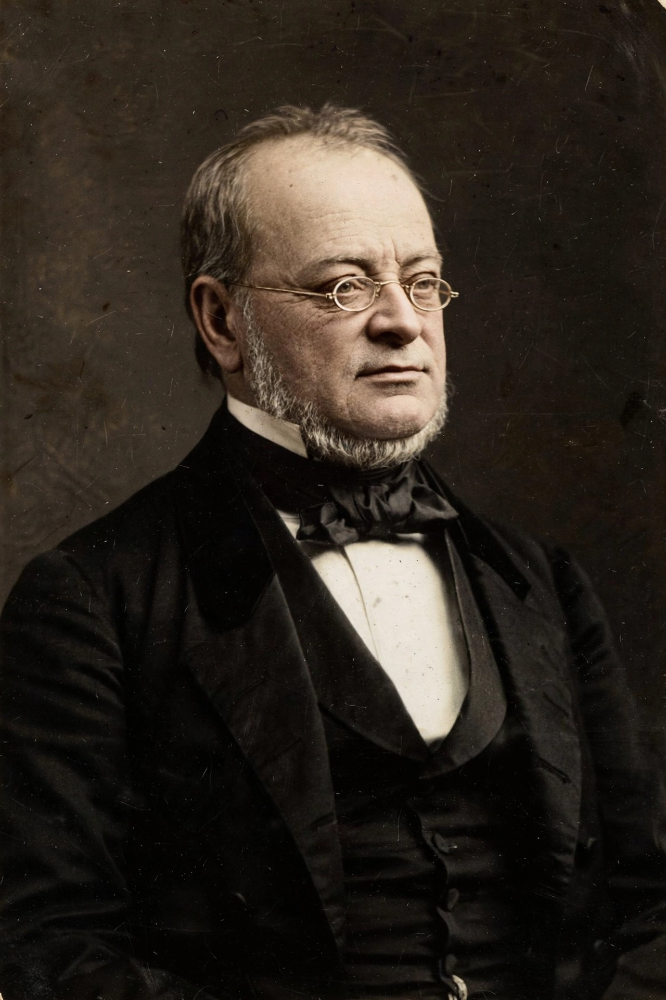

Camillo Paolo Filippo Giulio Benso, Count of Cavour (10 August 1810 – 6 June 1861) was an Italian statesman and a leading figure in the movement toward Italian unification, the Risorgimento, and the first prime minister of the Kingdom of Italy.
| Count of Cavour | |
|---|---|
 | |
| Born | 10 August 1810, Turin |
| Died | 6 June 1861, Turin |
| Office | Prime Minister of Piedmont-Sardinia; first PM of Italy (1861) |
A liberal aristocrat influenced by British parliamentary government, Cavour founded the newspaper Il Risorgimento, modernised Piedmontese agriculture and industry, and became prime minister of the Kingdom of Sardinia in 1852. He strengthened the economy, reformed finances, reduced clerical privilege and built railways.
Cavour sent Piedmontese troops to the Crimean War to win a seat at the Congress of Paris (1856), and in the secret Plombières Agreement of 1858 secured Napoleon III's support against Austria, leading to the Franco-Piedmontese victory of 1859 and annexation of Lombardy and central Italy. He skilfully exploited Garibaldi's Expedition of the Thousand in 1860, and in March 1861 the Kingdom of Italy was proclaimed under Victor Emmanuel II, with Cavour as its first prime minister. He died weeks later, reportedly saying "Italy is made; all is safe."
Recreated from memory.